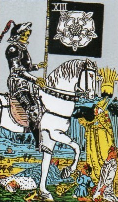
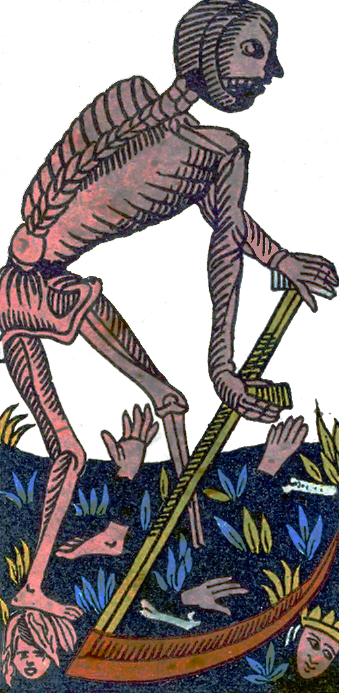
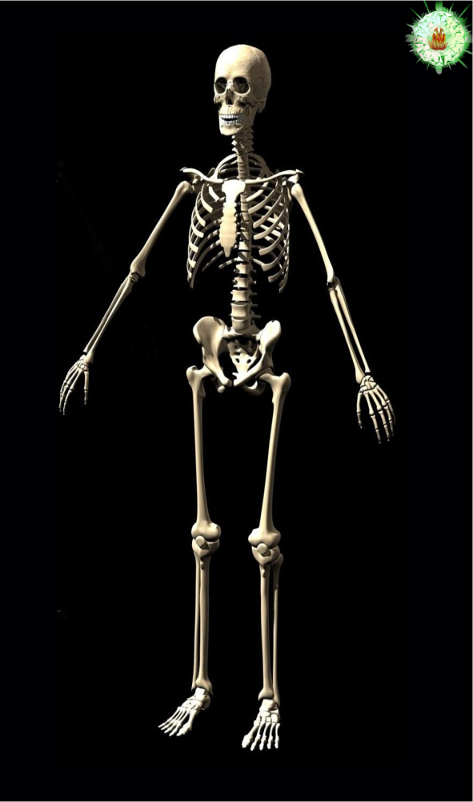
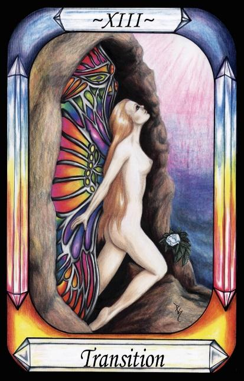
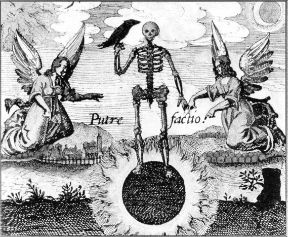

Death




The number of Death (13) has been swapped with Temperance (14).
Representation |
The Grim Reaper. |
Meaning |
Mortals die. This can be seen as making room for their children. Genetically, natural selection works best when the older genes are removed from the pool, and not left to interbreed with their children. |
Opposite card |
The Lovers, propagating the species. Individuals may die, but the species goes on. |
Function |
Meaning of Life |
Death is that aspect of the circle of life under Nature, by which the old makes way for the new.
[P38] God said “Go forth and multiply. Let those with a Mind know themselves to be immortal, and that the cause of Death is the love of the body ….
[P39] And Governors and Fate changed according to Gods will, so that all creatures multiplied. … but he that loves the body stays in darkness and his senses tell him of the mortality of his body.
[P40] The ignorant die because they choose to associate themselves with that part of themselves which is mortal and will die. i.e. the Earth and Water that descended to Nature. [Death]
RWS Imagery
A skeleton in armour rides a pale horse and carries a banner. At his feet lie dead people and some alive pleading with him. The live people appear to be the pope in gold, and two children. In the background the Sun rises between two grey pillars or towers.
Interpretation of RWS Imagery
The Waite-Smith reference to Death is an indirect reference to the Black Plague, which occurred during the British reign of Henry VIII indicated by the flag showing a Tudor Rose. Also, Death comes to all, and rides a pale horse as per the biblical book of Revelations.
Discussion
“Destruction brings about Death of the material; But the spirit renews, like before, the life. Provided that the seed is Putrefied in the right soil; Otherwise all Labor, work and art Will be in vain” Daniel Stoleius, Chemisches Lustgaertlein, 1625.

Figure 21- Alchemical image of Putrefaction
Engraving 9 from, J.D. Mylius Philosophia Reformata, Frankfurt, 1622.
Figure 21 above shows an alchemical image from the period. It reflects the Pymander principle that the material form dies, but the spirit renews, and so is immortal.